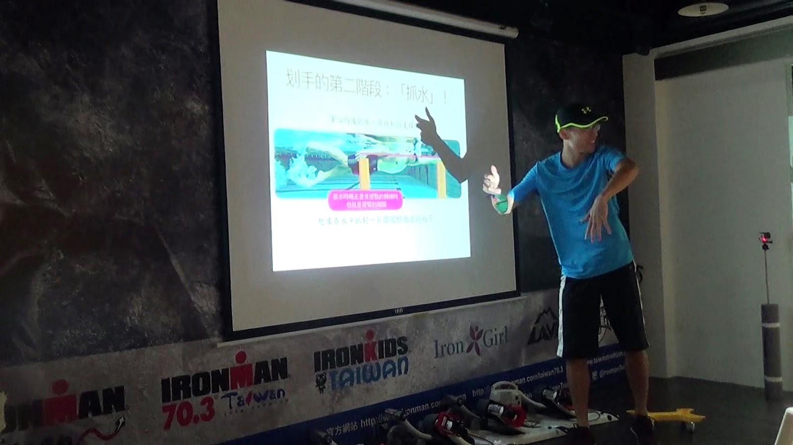
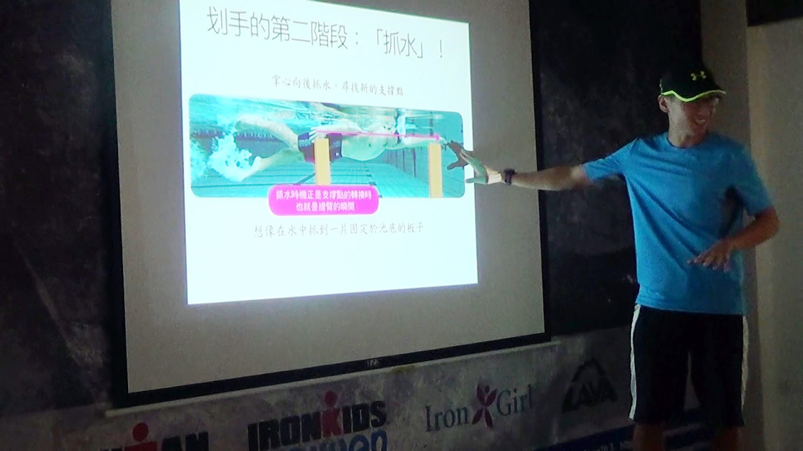
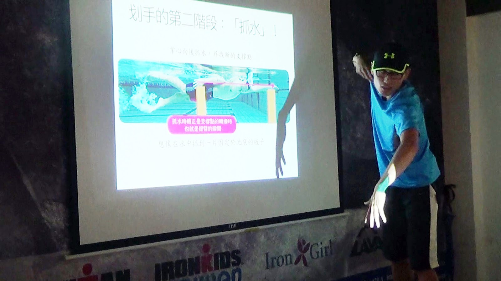
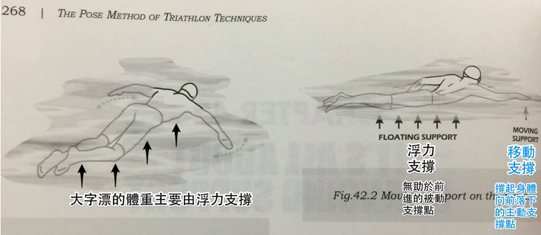
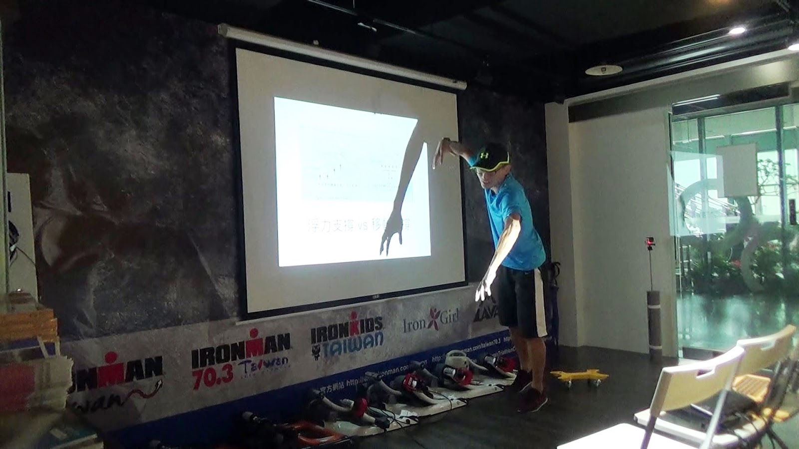
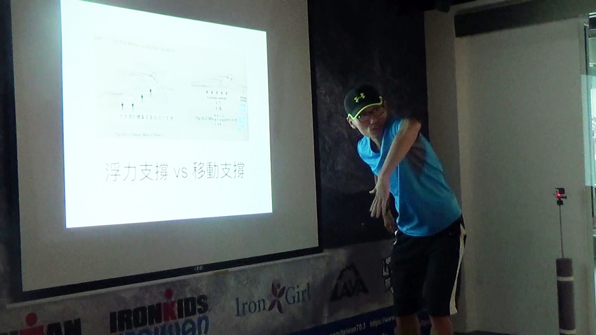

游泳課逐字稿 04：划水的動作是不是像蜘蛛人爬大樓一樣？
內容提供／徐國峰．逐字稿繕打／范寶蓮
前一篇：游泳課逐字稿 03：我們如何分辨游泳技術的好壞？從動作的優美程度，還是……？
學員：「剛剛老師說的，讓我想像，是不是像攀爬大樓時，往上爬的時候，是不是要我們的手去在最前面去支撐我們全部的體重？往下拉，再換另一隻手？這和老師說的是，是不是一點點類似？」
國峰換一張投影片：「是的，是不是就像這樣子？」

學員：「對對，這讓我想像，像蜘蛛人爬大樓一樣。」
國峰：「是的，沒有錯，但我有點跳太快了。我在水裡，根本沒有東西可以攀。那我到底要怎麼樣真的有個板子，在這裡讓我抓住？而且這個板子不會動？這是一個關鍵字，這個板子不會動！如果這個板子在底下有輪子，或是它像一個浮球會動，你抓得住東西嗎？還是一樣會不見，對不對？當這個板子不會動，你想像抓著，身體就會往前進。所以現在要怎樣創造出一個真的不動的支撐點？不動支撐點的關鍵是，你要把這個體重放上去。我一再強調，你體重不在的話，這支撐點不會穩固，它是虛的。你體重愈多上去，你能運用的愈多。前提就是，你要有那個知覺和力量，所以我們等一下才會做這麼多的支撐訓練。待會我們會從簡單到難，大家視情況做，當你沒辦法做的時候我就會降難度，做比較簡單的。」
國峰回到剛剛的話題：「所以你剛剛講的，和我說的完全一樣，這也是支撐，你把體重放上去，然後就往前了。」

「其實傳統講法和我現在的講法完全一樣沒有衝突。只是我把背後的原理向大家解釋而已，為什麼要抓水？抓水、抱水、推水、提臂與入水只是優秀划手的描述。抓水與抱水這個過程最重要，因為它是把體重壓下去的關鍵期，因為這兩個過程剛好是另一邊的肩膀提到最高點時。」

學員：「但是那個水不是固體啊，你怎麼樣可以把體重放上去？」
國峰笑了，似乎早知道學員會提出這好問題。「在於，一開始手往下壓這一步。」
手往下壓、另一邊的肩膀提起來浮力變小後體重就會上去；原理在於，把浮力轉移過去那個瞬間，體重就會過去。這樣聽起來有點太抽象，舉個例子。你想像一下現在漂在水面上大字漂，學游泳一般都會學大字漂。為什麼要做大字漂？做這個動作的時候我們人最容易浮起來，浮起來的時候是誰在承擔體重？水。水的浮力在承擔體重，投影片中這個箭頭的意思就是說，水承擔體重，把你撐起來。」

【圖】出自 Pose Method of Triathlon Techniqes, p268
「現在當我們做這個動作慢慢往前移的時候，這時候都還是浮著，有些人腳會比較沉，可以輕輕踢水讓腳浮著。在這個過程你手往前移的時候，體重都分攤在水上面，你體重不在手掌上，你這時候划水，會是空的。可是當我們把右邊的肩膀提起來，提起來的時候浮力減少，因為浮力等於沉在水裡的體積乘上水的密度，所以我肩膀出來，浮力會減少，承擔的體重就會不見啦，此時做出抓水、抱水往下壓的動作就可以把失去的體重搶過來。因為你要主動把不見了的體重抓過這邊來，如果沒有的話呢，因為沒有人幫你承擔體重，你就會沉下去。
「每個人只要大字漂，提右臂就會沉下去。如果你做出手掌與前臂下壓的動作讓體重過來就會有水感。重點是手肘不能掉下來，一掉下來體重就不見了。」

等一下你們會做很多搖櫓的動作就是，你一定要讓你身體的鍊很強壯地連結，可以把體重支撐過來。如果這個鏈結跑掉了，支撐就不會穩固，什麼是跑掉了？像下圖：手肘掉下來支撐鏈就斷掉了。這樣是沒有力量的，你的體重就不會來到手掌這邊。手肘要高於手掌這樣才會有體重，支撐體重的鏈結才會穩固。所以教練為什麼會說要高肘。

高肘的理由就在這裡，一定要高肘另一側的體重才會完整的壓上來。